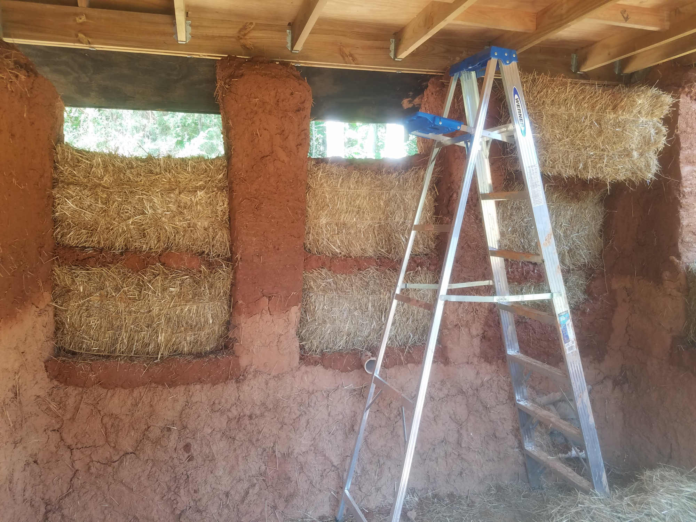
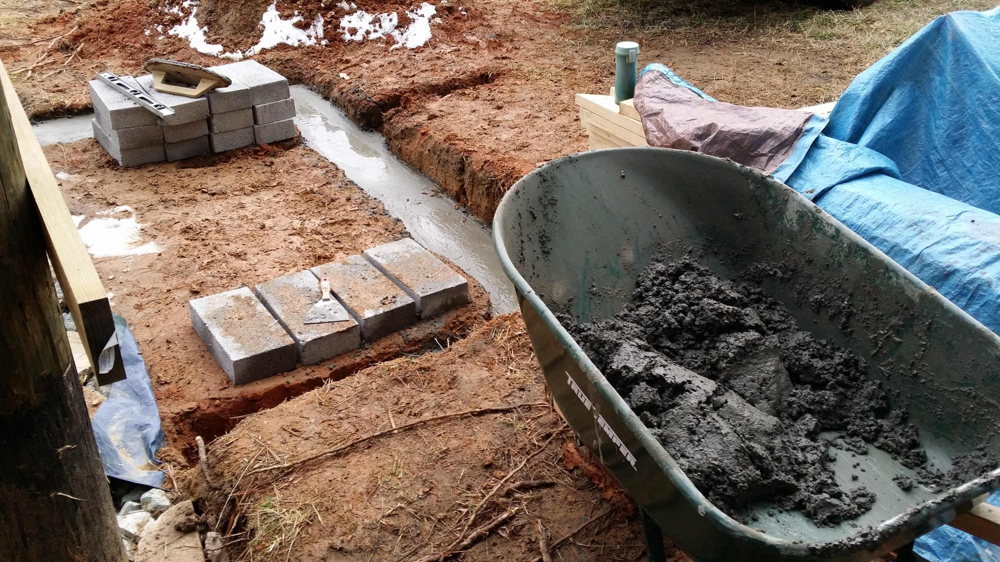

Building Your Own House Can Change Your Life

Stand Out in a World of Convenience
Ever thought of building your own house? Maybe not. But I think you should! Now that might seem like a pretty strange statement in a world where we can buy everything from a pizza for supper to a home pre-made or made by someone else. So why spend the enormous amount of time learning carpentry, building codes, architecture, and engineering as well as building the house, when we can pay experts to do it? Over the next few weeks, I'll share my journey building a minature house, and make a case for a truly DIY home.
Wait, What is It?
Several years ago, I heard for the first time of an alternative building style called "cob." Now, if you're like the dozens of people I've encountered in department and home supply stores, you have never heard of a cob house. And you might be getting hungry thinking of a Cobb salad right now! But it has nothing to do with that. The term "cob" comes from an old English word for a loaf of bread. Basically, a cob house is one continuous, unbaked brick. But not exactly. I'll give more details later, but the main thing you need to understand right now is that a cob house can be built anywhere, by anyone, in virtually any size, for cheaper than a stick-built house and with better insulation values, and significantly less impact on the environment. Essentially, all you have to do to build one is find the land, build a solid foundation (or stemwall), and then mix together clay, sand, straw and water in "loaf" size chunks, pile it on the stemwall until you have your walls, and cover it with a basic roof. It's a beautifully simple process.
But what if you don't want to live in a mud house? No problem! I don't live in one right now either. But I do live in a house built by the family who lived in it for the 70 years before I got here. Whether you build a tiny mud house or a huge stone mansion, building your own house will profoundly impact how you live your life. The point isn't the type of house you build, or whether you live in it for the rest of your life, the point is that you engage the primal need to provide shelter. I'll be sharing a lot about building specifically with cob, but the insights I share don't just apply to alternative building styles. What really matters is that you take on the challenge to build a place you could call home.
A New Living Space
Building your own house is a daunting task: but that's really the point. If you can persevere through the plethora of challenges and set backs in building a living space, there are few tasks you'll feel you really have to get someone else to do. Replace a toilet seat? No problem. Rotate car tires? Easy! (With the help of a few tutorials on YouTube). Plus, if you're careful and purposeful about it, you could actually save yourself thousands of dollars, and the trouble of finding an all-consuming job to pay for a living space you hardly have time to enjoy. Building your own house can pay enormous dividends; but the most important one is that you have the mindset that there's no task so daunting that you can't try it
A few more pictures...
Here are some of the other steps along the way to building a house out of earth and straw. It's a pretty involved process. Check it out!

{kind=link}
{kind=link}
Learn more about what I do
Follow Me
© Modern Renaissance